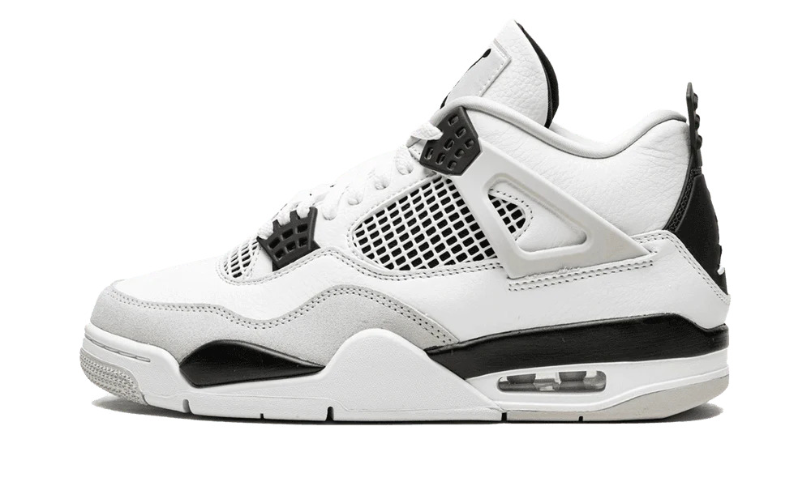
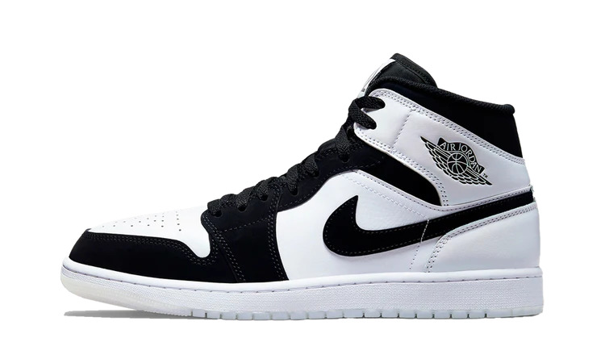
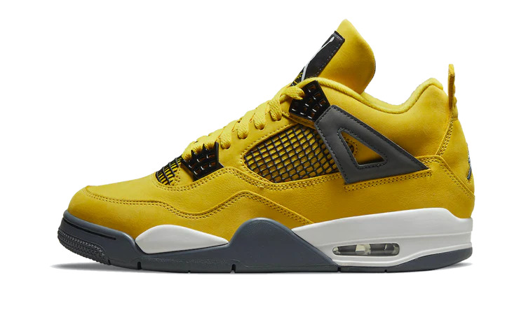
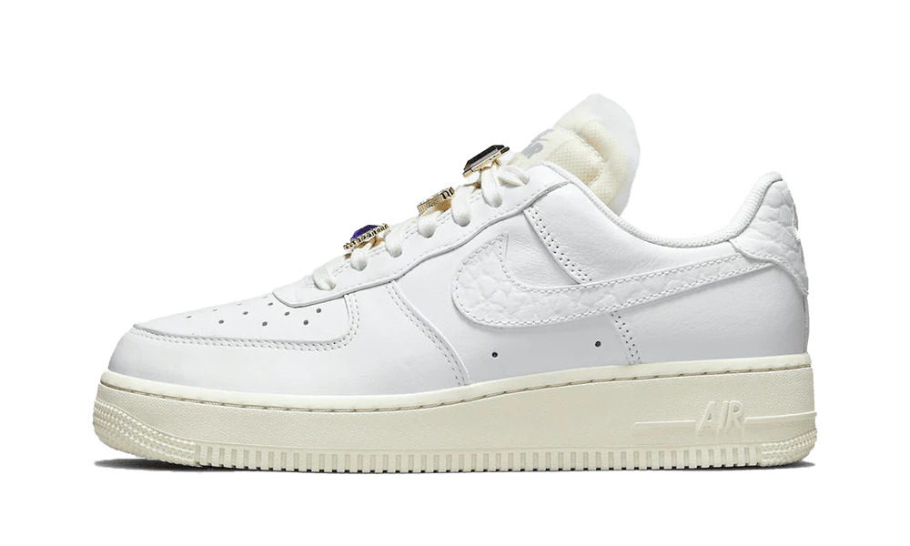
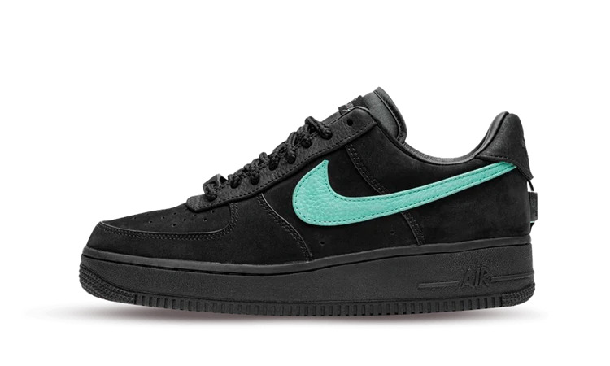
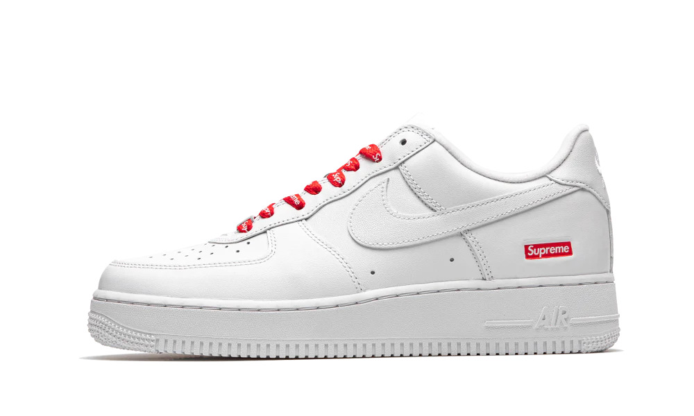
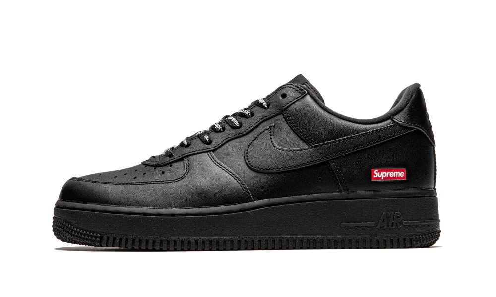
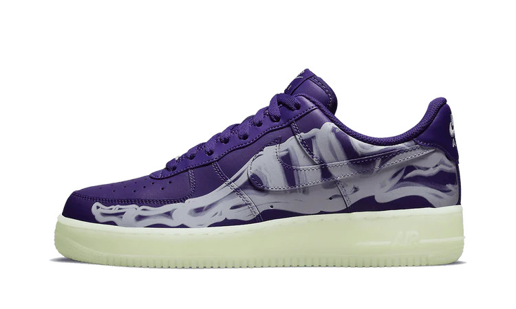

Dunk

Nike Dunk Low Retro White Grey
A Nike Dunk Low Retro White Gray a Nike kéttónusú Dunk Low kollekciójának részeként került be. Ez a szürke és fehér palettába öltözött cipő bőr felsőrésszel, fehér rátétekkel, fűzővel, Swoosh emblémával és középtalppal rendelkezik. A szürke színt kiemelik a gumi külső talpon, a szőtt Nike nyelvcímkén és a béléseken.

Nike Dunk Low Retro White Black
Az iskolai lelkületű College Colors Programtól a vibráló Nike CO.JP kollekcióig a Nike Dunks számos színárnyalatot látott a dizájn 1985-ös kezdete óta. De minden egyes új színváltozatnál a Dunk klasszikus színblokkolása megmaradt némileg. A Nike időtlen színblokkolását a Nike Dunk Low Retro White Black-kel alkalmazta.

Nike Dunk SB Low Pro QS Neckface
Ennek az SB Low Pro Nike Dunk cipőnek a fekete nubuk felsőrészén számos folt található, amelyek a Neckface jellegzetesen kifejező vizuális érzékét hordozzák. Ezen a tornacipőn számos folt is található, amelyek kísérteteket, sírköveket, koponyákat, démonokat és kígyókat ábrázolnak.

Nike Dunk Low Disrupt 2 Panda
Ez a nők számára tervezett tornacipő fehér textil alappal, szintetikus velúr rátétekkel, dupla szemhéjjal és többféle fűzési lehetőséggel rendelkezik. Az oldalsó oldalán egy hímzett Swoosh és egy túlméretezett Swoosh, a sarkán pedig egy húzófül található.

Nike Dunk Low Grey Fog
A Nike Dunk Low Grey Fog fehér bőr felsőrésszel rendelkezik, Grey Fog bőr rátétekkel és Swooshekkel. Innentől egy hozzáillő szövött nyelvcímke, sarokfül és talp teszi teljessé a dizájnt.
A Nike Dunk Low Grey Fog 2021 szeptemberében jelent meg, és 100 dolláros áron kapható.

Nike SB Dunk Low Travis Scott
Travis Scott a Nike SB-vel együttműködve kiadta első hivatalos gördeszkacipőjét, a Nike SB Dunk Low Travis Scottot (Regular Box), amely már elérhető a StockX-en. Ez a dizájn hasonló tervezési esztétikát követ, mint az Air Force 1 Low Travis Scott Cactus Jack esetében.
Jordan

Air Jordan 4 Retro Military Black
Az Air Jordan 4 Military Blue színblokkolt stílusát levonva az Air Jordan 4 Military Black sima fehér bőr felsőrésszel rendelkezik, világosszürke Durabuck lábujjvédővel és hálós TPU betétekkel. Katonai fekete fűzőlyukak, sarokfülek és alátétek éles kontrasztot adnak a felsőhöz. Fekete és fehér színkeverésben kapható.

Air Jordan 1 Retro Off-White Chicago
Az Off-White x Air Jordan 1 Retro High OG 2017 egyik legjobban várt lábbelije volt. Ez volt az első alkalom, hogy Virgil Abloh, a milánói székhelyű divatmárka és a Jordan Brand alapítója összeállt. A "The 10" becenévvel ellátott páros eredeti, chicagói témájú fehér, fekete és egyetemi vörös színben kapható.

Air Jordan 1 Mid Diamond Shorts
A Jordan 1 Mid Diamond Shorts sima fehér bőr felsőrésszel érkezik, fekete Durabuck rátétekkel és Swooshekkel. A bokánál egy hagyományos Wings logó utal az Air Jordan kollekció eredetére. A Jumpman szőtt nyelvcímke és a félig áttetsző külső talp adja a végső simítást.

AIR JORDAN 4 RETRO LIGHTNING
Az eredetileg 2006-ban kiadott Air Jordan 4 Retro Lightning (2021) az egyik leghíresebb retro Jordan 4 színárnyalat a Jordan Brand katalógusában. Tour Yellow Durabuck felsőrésze fekete hálós panelek és sötétszürke fűzőlyukak vannak. A nyelven fekete Jordan Flight logó folt fehér és sárga ékezetekkel egészíti ki a felsőt.

Jordan 1 Retro High Travis Scott
Az Air Jordan 1 Travis Scott fehér bőr felsőrésszel rendelkezik, Mocha velúr rátétekkel és fekete bőr, fordított Swooshekkel. A nyelven található vörös ütések enyhén elütik a design földszíneit. A sarkon egy dombornyomott Cactus Jack logó helyezkedik el.Ezenkívül a gallérban van egy rejtett zseb. Egyedi dizájn egyedi művésznek.

Air Jordan 1 Retro OG Stage Haze
A klasszikus Black Toe témát követve az Air Jordan 1 High OG Bleached Coral sima, fehér bőr felsőrésszel rendelkezik, fekete rátétekkel és világosszürke Durabuck sarokborításokkal. A hagyományos Nike szőtt nyelvcímkék és a Jordan Wings logók a gallérokon retro hangulatot kölcsönöznek.
Air Force

Nike Air Force 1 Low Jewels
Ha arra kérik, hogy idézzen fel klasszikus Nike tornacipőket, a Nike Air Force Ones több mint valószínű, hogy megjelenik a lelki szemei előtt. Kiegyensúlyozott és időtálló kialakítása 1982 óta velünk van. Az AF1 pályán debütált kosárlabdacipőként, de az utcákon is gyorsan népszerűvé vált.

NIKE AIR FORCE 1 LOW LX BLACK
A lime (ejtsd: lájm), savanyú citrom vagy zöldcitrom (Citrus aurantiifolia) ázsiai eredetű, a rutafélék (Rutaceae) családjába tartozó citrusféle. A növényfajt és termését egyaránt így nevezik. A lime gyümölcsöt íze miatt gyakran a citromhoz hasonlítják, de annál savanyúbb, jellegzetesebb, mérete kisebb és színe jellemzően zöld.

Nike Air Force 1 Low Tiffany & Co.
A grépfrút (Citrus x paradisi), angolos írásmód szerint grapefruit, más néven citrancs a citrusformák legfiatalabb tagja. Az 1750-es években fedezték fel, valószínűleg Barbadoson. A pomelo (Citrus grandis) és a narancs (Citrus sinensis) hibridjeként alakult ki, bár az elsőhöz közelebb áll.

Nike Air Force 1 Low Supreme White
A citrom, más néven közönséges citrom, valódi citrom vagy európai citrom[1] (Citrus × limon) a citrusformák (Citroideae) alcsaládjába tartozó Citrus nemzetség egyik növényfaja. Termése, melyet szintén citromnak hívnak, déligyümölcs és egyben fűszer is.

Nike Air Force 1 Low Supreme Black
A mandarin (Citrus reticulata) a citrusformák közé tartozó déligyümölcs. Dél-Kínából származik, Európába csak a 19. században kezdték beszállítani.

Nike Air Force 1 Low Purple Skeleton
A pomelo vagy pummelo (avagy középső gyümölcs) (latin: Citrus grandis, binomiális név: Citrus maxima) a rutafélék családjába tartozó, valószínűleg Malajziában és Polinéziában őshonos déligyümölcs.